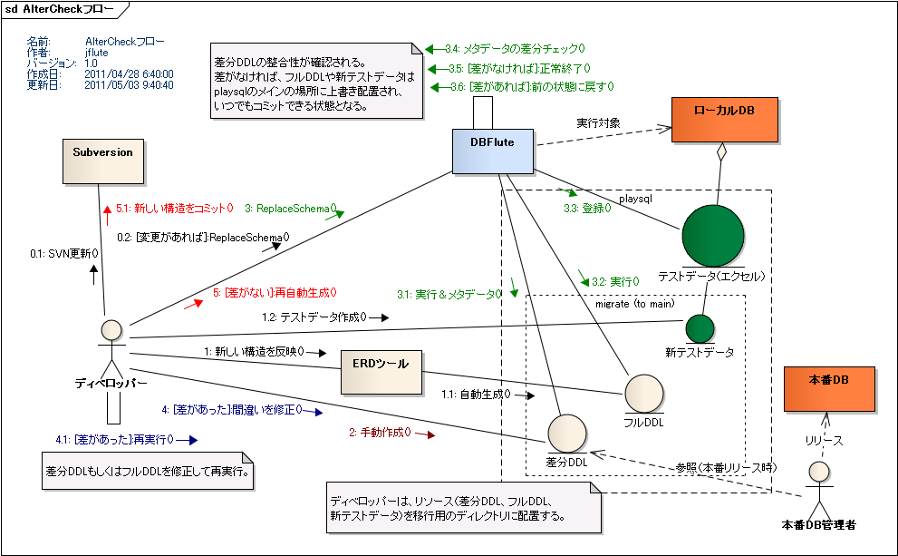

運用後DB変更
運用後の悩み
システム運用後のDB変更、本番環境には差分SQL(alter文など)を適用する必要があり、当然のことですが、ReplaceSchema は利用できません(利用してはいけません)。差分SQLはERDツールから自動生成するか、手動で作成する必要があります。 一方で、新しいメンバーの開発環境や、新しいテスト環境などの構築のために、フルDDLも必要となります。そもそも開発環境では ReplaceSchema を大いに活用して運用後も(運用後こそ)テストデータ管理を徹底していきたいものです。
ただ、差分SQLはこれはこれでしっかりと検証をしなくてはなりません。 手動作成のものはもちろん、ツールから自動生成した場合でもぶっつけ本番は避けたいものです。 結合テスト環境などでの適用も考えられますが、結合テスト環境自体を ReplaceSchema 管理にする場合もありますし、そもそももっと前のタイミングで検証したいものです。
と考えていくと、やはり煩わしい作業なしではなかなかフルDDLと差分DDLの整合性を保つことはできません。 気をつけていればほとんどの場合は大丈夫とはいえ、運用後の開発というのは一つ一つの期間が短くリスクも高い、 そのわりには長く繰り返し続いていくもので、できれば安全度を高めて精神的負担も少なくしたいところです。
ReplaceSchema で AlterCheck
ReplaceSchema で差分SQLを検証する仕組みがあります(@since 0.9.8.3)。 この仕組みを使って、フルDDLと差分SQLをしっかりと整合性をとって運用していくことを DBFlute は推奨します。
前のDB(PreviousDB)に差分SQL(AlterSQL)を加えたものと、フルDDL(CreateSQL)の実行結果は同じはずです。ReplaceSchema で差分SQLを実行し、その後でフルDDLを使った通常の ReplaceSchema を実行して差分をチェックします(AlterCheck)。 この課程を自動化します。
- AlterSQL を実行
- PreviousDB にそのまま AlterSQL を実行し、メタデータを保持しておきます。
- CreateSQL を実行
- CreateSQL を使った通常の ReplaceSchema 処理を実行し、またその結果のメタデータを取得します。
- AlterCheck
- 二つのメタデータをチェックし、差があれば PreviousDB を復元してタスクを中断します。 差分を確認して AlterSQL を直し再度 ReplaceSchema タスクを実行、これを差がなくなるまで繰り返します。 差がなければ "PreviousDB + AlterSQL" と CreateSQL の結果が同じであるということが確認され、DB は新しいDB構造の状態になります。
運用後のDB変更フロー
図 : 運用後のDB変更フロー 
{kind=link}
AlterCheck の利用方法
(前の)最新の状態に
まずは、Subversion などのバージョン管理からリソースを全て最新の状態にし、もしDB変更に関わる更新がある場合は、 (いつも通りの) ReplaceSchema を実行して、DBを(前の)最新の状態にします。この時点で ReplaceSchema は必ず成功していなければなりません。
SQLファイルの配置
playsql の配下の migration/alter ディレクトリに AlterSQL を配置します。alter で始まる .sql のファイルが AlterSQL として認識されます。このディレクトリに AlterSQL が一つ以上あると ReplaceSchema が AlterCheck を行います。
また、migration/create に CreateSQL を配置します。playsql 配下の SQL と同じ仕様でそのときのDB変更で変わったファイル、もしくは、新しく追加されたファイルだけを配置します。(いつもの) playsql 配下に直接置かないことで、PreviousDB に戻す処理(ロールバック)を自動化することができます。
ex) AlterSQL と CreateSQL の配置 @playsql
dbflute_exampledb
|-playsql
|-data
|-migration
| |-alter
| | |-alter-10-basic.sql
| | |-alter-20-view.sql
| |-create
| |-replace-schema-10-basic.sql
| |-replace-schema-20-view.sql
| |-take-finally.sql
また、新DB用のデータファイルも create 配下に配置することができます。
AlterSQL の実行
この状態で ReplaceSchema タスクを実行すると、まずは AlterSQL が実行されます。そもそも AlterSQL が実行に失敗する場合は、ReplaceSchema は PreviousDB にロールバックし、タスクをすぐに中断します。
その際、AlterSQL が NG であることを示すマークファイル(AlterNGマーク)が alter 配下に作成されます。このマークがある場合は ReplaceSchema はロックされ実行ができません(実行してもエラーに)。お決まりの最後のログメッセージ(Final Message)の情報をもとに AlterSQL を直したら、このマークファイルを削除してから ReplaceSchema を再実行します。
ex) AlterSQL の実行自体にエラーがあることを示すAlterNGマーク @playsql
dbflute_exampledb
|-playsql
|-data
|-migration
| |-alter
| | |-alter-10-basic.sql
| | |-alter-20-view.sql
| | |-alter-NG.dfmark
| |-create
| |-replace-schema-10-basic.sql
| |-replace-schema-20-view.sql
| |-take-finally.sql
AlterSQL の実行が終わると、DBFlute はその状態のメタデータを取得し、migration/schema 配下に SchemaXML として出力します。ここでの SchemaXML は内部的なリソースとして扱われるため、通常は意識する必要はありません。
CreateSQL の実行
その後、DBFlute は、PreviousDB へのロールバックを実現するために、playsql 配下の上書き予定の SQL を migration/tmp/previous ディレクトリにバックアップし、代わりに CreateSQL を playsql 配下に配置します。この一時ディレクトリも通常意識する必要はありません。
そして、いつもの ReplaceSchema の処理を実行されます。つまり、CreateSQL を使った最新のDBの状態への Replace となります。もし、この処理でエラーが発生した(CreateSQLやデータファイルに不備があった)場合、バックアップされた SQL などが元の場所に戻り、PreviousDB へロールバックされます。最後のログメッセージ(Final Message)の情報をもとに CreateSQL やデータファイルを直して再実行します。
AlterCheck の実行
実行に成功した場合は、DBFlute は再度その状態のメタデータを取得し、AlterSQL 実行直後状態と比べます。差があれば、AlterSQL と CreateSQL が不整合の状態にあると言え、バックアップされた SQL などが元の場所に戻り、PreviousDB へロールバックされ、AlterNGマークが作成されてタスクは終了します。
そのときの差分情報は、migration/schema 配下に migration-diff-result.diffmap というテキストファイルに出力されます。 これを参考に AlterSQL を直し、AlterNGマークを削除して再度 ReplaceSchema を実行してやり直します。
ex) AlterSQL の実行自体にエラーがあることを示すAlterNGマーク @playsql
dbflute_exampledb
|-playsql
|-data
|-migration
| |-alter
| | |-alter-10-basic.sql
| | |-alter-20-view.sql
| | |-alter-NG.dfmark
| |-create
| | |-replace-schema-10-basic.sql
| | |-replace-schema-20-view.sql
| | |-take-finally.sql
| |-schema
| |-migration-diff-result.diffmap
この差分結果は、HistoryHTML で利用されているものと同様のものです。ここでは、"PreviousDB + AlterSQL" から "CreateSQL" への差、ということで出力されます。例えば、テーブルが追加されている(ADD)とある場合、AlterSQL でそのテーブルを ADD するように修正、と解釈できます。
また、差分ルールは HistoryHTML の仕様と同じです。例えば、"カラム定義順序の違い" や "同じ構造で制約名だけの変更" に関しては差と認識されません。
AlterCheck が成功
AlterCheck が成功した場合は、CreateSQLは playsql 配下に配置された状態のままとなり、そのままコミットできる形になります。 AlterSQL は、migration/history 配下の日付付きのディレクトリに保存のために配置されます。 バックアップされた PreviousDB 用の SQL や一時的に利用していたリソース(差分結果やSchemaXMLなど)は削除されます。
最後のログメッセージには、AlterSQL の実行結果と CreateSQL の実行結果の両方が表示され正常終了となります。
ロールバックの失敗
そもそもロールバックが失敗するような状態で AlterCheck を利用することが基本的に許されませんが、万が一ロールバックの失敗した場合は、 そもそも PreviousDB の環境が確立されていないということで、PreviousDB が NG 状態であることを示すマークファイル(PreviousNGマーク)が alter 配下に作成されます。このマークがあると、ReplaceSchema は AlterCheck を行わず、いつも通りの ReplaceSchema を実行します。つまり、PreviousDB のためのリソースを使った ReplaceSchema が実行されます。
PreviousDB が確立した状態になるまで AlterCheck は封印されます。 成功すると自動的にPreviousNGマークは削除され、AlterCheck を使った ReplaceSchema が実行できるようになります。
ロールバックがポイント
PreviousDB へ自動でロールバックされることが、この機能のポイントであると言えるでしょう。 AlterSQL や CreateSQL (or データファイル) の修正の後にすぐに再実行して検証する というワークフローを実践することができるのです。
やり方がベタなので、少々ロールバックの処理自体に時間が取られますが、中途半端な状態になってしまうとそもそも AlterSQL を適用できなくなってしまいますし、元に戻すのに若干の面倒な作業が発生してしまいます。
ちなみに、ロールバック処理自身の情報は、最後のログメッセージ(Final Message)にはロールバック自体がエラーになるときを除いては登場しません。 FinalInfo では AlterSQL や CreateSQL の結果が優先して表示されます。
新DB用のデータファイル
DB変更の影響はSQLだけでなく、エクセルデータやTSVデータなどのデータファイルにも及びます。 新しい構造のために修正されたデータファイルは、migration/create/data 配下に配置します。そこからの配置はいつものデータファイルの配置(playsql/data)と同じ仕様です。
また、dataprop ファイルも同じように新しい構造用に配置することができます。
ex) 新しい構造のためのデータファイルの配置 @playsql
dbflute_exampledb
|-playsql
|-data
|-migration
| |-alter
| | |-alter-10-basic.sql
| | |-alter-20-view.sql
| | |-alter-NG.dfmark
| |-create
| | |-data
| | | |-common
| | | | |-xls
| | | | |-10-master.xls
| | | |-ut
| | | |-tsv
| | | | |-UTF-8
| | | | |-10-PURCHASE.tsv
| | | |-xls
| | | |-20-member.xls
| | | |-defaultValueMap.dataprop
| | |-replace-schema-10-basic.sql
| | |-replace-schema-20-view.sql
| | |-take-finally.sql